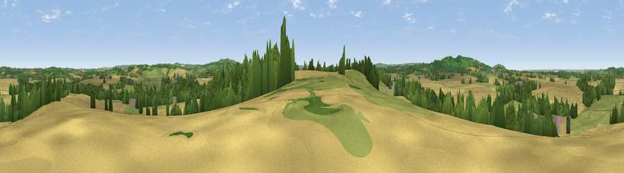

Viewpoint near Tredington
#24363 in England · top 51% of its area beats it · near TredingtonThe view, rendered

A 360° render of this exact spot computed from the terrain model, tree cover and land cover — summer colours, afternoon light, calibrated against photographs of famous viewpoints. Real trees, hedges and buildings will differ in detail.
The panorama
Grey silhouette: terrain skyline in each direction (720 bearings, Earth curvature and refraction included). Dashed green: skyline with trees (+15 m) and buildings (+8 m) as obstacles. Blue strip: how far the ground is visible on each bearing.
Where the view opens
Wedge length = distance to the farthest visible ground on that bearing (vegetation-aware). Rings at 10, 25 and 50 km.
What fills the view
50% cropland · 35% grassland · 13% woodland · 1% built-up
Angular shares of the visible panorama (visual magnitude), not map area. Landscape diversity 0.45 (0–1 Shannon).
Key numbers
More beautiful places nearby
The staircase of upgrades: each row has a higher view potential than everything closer. Driving times are estimates from straight-line distance, calibrated against real road routing — check an actual route before setting out.
| Place | Direction | Drive | Score |
|---|---|---|---|
| Viewpoint near Honington | ESE · 2 km | ~6 min | 49.8 |
| Viewpoint near Ilmington | WSW · 4 km | ~10 min | 66.6 |
| Viewpoint near Ilmington | W · 4 km | ~10 min | 72.6 |
| Viewpoint near Meon Vale | WNW · 8 km | ~16 min | 77.0 |
| Broadway Hill | WSW · 15 km | ~27 min | 77.7 |
| Viewpoint near Elmley Castle | W · 28 km | ~44 min | 80.5 |
| Bredon Hill | W · 29 km | ~46 min | 83.0 |
| Summer Hill | W · 48 km | ~69 min | 85.4 |
52.08366, -1.63476 · source: screening · position refined by local search. Computed location — check access rights before visiting.